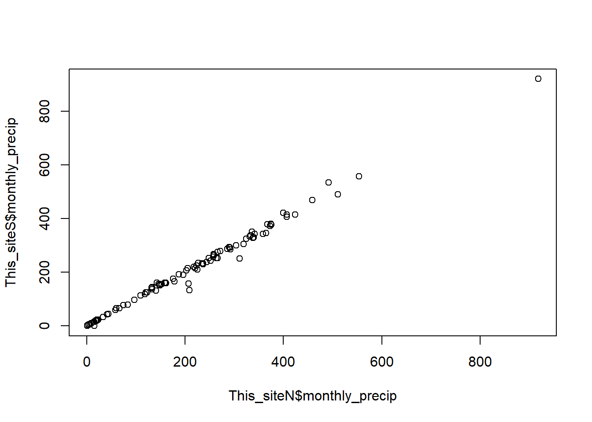

library(tidyverse)
library(ggplot2)
library(readxl)1 Gather STRI data
1.1 Libraries
1.2 Data
The stri_met_stations.csv contains links and metadata for all sites listed in https://biogeodb.stri.si.edu/physical_monitoring/
DIRTOMET<-"../tables/stri_met_stations.csv"
met_stations<- read.csv(DIRTOMET)
all_stations<-unique(met_stations$alias)
print(all_stations) [1] "CELESTINO" "AVA" "BCICLEAR" "BCIELECT" "BOCAS"
[6] "PCULEBRA" "FORTUNA" "GALETASTRI" "PNM" "SANBLAS"
[11] "SHERMAN" 1.3 Functions
The following function calculates monthly precipitation given the standard format of the STRI data, by default it only includes values label as “good”
monthly_precip<- function(file, include=("good"),site_name){
sheets<-read.csv(file) %>% filter(chk_note %in% include)
if (nrow(sheets)<30){
stop("Error: not enough days with good measurments")}
daily_precip<-sheets%>%group_by(date)%>%summarize(daily_precip= sum(ra, na.rm = T))
monthly_precip <- daily_precip %>% mutate(month_year = as.Date(paste0(format(as.Date(date, "%d/%m/%Y"), "%Y-%m"), "-01")))%>%
group_by(month_year) %>% summarize(monthly_precip = sum(daily_precip, na.rm = T))
monthly_precip$site<-site_name
return(monthly_precip)
}The download_met function download the file , unzips it and then erases the zip file
download_met<- function(site,csv){
link<-csv[csv$alias==site,'link']
destfile<-paste0("../data_ground/met_data/STRI_data/",csv[csv$alias==site,'alias'],".zip")
download.file(link,destfile =destfile , mode = "wb")
unzip(destfile, exdir = paste0("../data_ground/met_data/STRI_data/",csv[csv$alias==site,'alias']))
file.remove(destfile)
}1.4 Loop over sites with a regular format or only having a single csv file.
sites <- c("PCULEBRA", "FORTUNA", "PNM", "SHERMAN", "AVA", "BCICLEAR", "BCIELECT", "BOCAS")
for (site in sites) {
download_met(site, met_stations)
files_in_site <- list.files(paste0("../data_ground/met_data/STRI_data/", met_stations[met_stations$alias == site, 'alias']),
recursive = TRUE, pattern = ".csv", full.names = TRUE)
This_site <- tryCatch(monthly_precip(files_in_site[1], include = c("good", "adjusted"), site_name = met_stations[met_stations$alias == site, 'alias']),
error = function(e) NULL)
if (!is.null(This_site)) {
write.csv(This_site, paste0('../data_ground/met_data/STRI_data/', met_stations[met_stations$alias == site, 'alias'], '.csv'))
}
rm(This_site)
}1.5 The following stations do not have a regular format
1.5.1 Galeta
GALETASTRI and GALETALAB share the same values in the first years, then in 2002 the values are different GALETALAB stops in 2007.
We accept the adjusted values for GALETASTRI which is the tower station, the metadata inform us that the ACP close-by station Limon bay was used for the gap filling.
site= "GALETASTRI"
download_met(site, met_stations)[1] TRUEfiles_in_site<-list.files(paste0("../data_ground/met_data/STRI_data/",met_stations[met_stations$alias==site,'alias']),recursive = T, pattern = ".csv", full.names = T)
This_site<-monthly_precip(files_in_site[2],include=c("good","adjusted"), site_name = met_stations[met_stations$alias==site,'alias'])
if (exists('This_site')) {
write.csv(This_site, paste0('../data_ground/met_data/STRI_data/', met_stations[met_stations$alias == site, 'alias'], '.csv'))
}
remove(This_site)GALETALAB has a second sensor in the laboratory. It has no notes, and does not follow the format of the other stations
GALETALAB<- read.csv(files_in_site[1])%>%mutate(month_year = as.Date(paste0(format(as.Date(date.time..yyyy.mm.dd.hh.mm.ss., "%Y-%m-%d"), "%Y-%m"), "-01")))%>%
group_by(month_year)%>% summarise(monthly_precip = sum(ra.mm., na.rm = T))%>% mutate(site="GALETALAB")
if (exists('GALETALAB')) {
write.csv(GALETALAB, paste0('../data_ground/met_data/STRI_data/', "GALETALAB", '.csv'))
}
remove(GALETALAB)1.5.2 San blas
The san blas station does not follow the standard format and only provides with the summaries.
site= "SANBLAS"
download.file(met_stations[met_stations$alias==site,'link'],destfile =paste0("../data_ground/met_data/STRI_data/",met_stations[met_stations$alias==site,'alias'],".xlsx") , mode = "wb")
file<- read_excel(paste0("../data_ground/met_data/STRI_data/",met_stations[met_stations$alias==site,'alias'],".xlsx"), sheet = 4)
file<-file[2:9,1:13]
SANBLAS<- file%>%rename('01'='...2','02'= '...3','03'= '...4','04'= '...5','05'= '...6','06'= '...7','07'= '...8','08'= '...9','09'= '...10','10'= '...11','11'= '...12','12'= '...13')%>%
pivot_longer(cols = c('01','02','03','04','05','06','07','08','09','10','11','12'), names_to = 'month', values_to = 'monthly_precip')%>%mutate(month_year = as.Date(paste0(format(as.Date(paste0('01/',month,'/2000'), "%d/%m/%Y"), "%Y-%m"), "-01")))%>%
select(month_year, monthly_precip)%>%mutate(site="SANBLAS")
if (exists('SANBLAS')) {
write.csv(SANBLAS, paste0('../data_ground/met_data/STRI_data/', "SANBLAS", '.csv'))
}
remove(SANBLAS)
file.remove(paste0("../data_ground/met_data/STRI_data/",met_stations[met_stations$alias==site,'alias'],".xlsx"))[1] TRUE1.5.3 Agua saluda Celestino tower
This site has 2 sensors within meters of each other
site= "CELESTINO"
download_met(site, met_stations)[1] TRUEfiles_in_site<-list.files(paste0("../data_ground/met_data/STRI_data/",met_stations[met_stations$alias==site,'alias']),
recursive = T, pattern = ".csv", full.names = T)
This_siteN=monthly_precip(files_in_site[1],include=c("good","adjusted"), site_name = met_stations[met_stations$alias==site,'alias'])
This_siteS=monthly_precip(files_in_site[2],include=c("good","adjusted"), site_name = met_stations[met_stations$alias==site,'alias'])
plot(This_siteN$monthly_precip, This_siteS$monthly_precip)
Merge both sensors and average them.
CELESTINO= merge(This_siteN, This_siteS, by = "month_year", all = TRUE)%>%mutate(monthly_precip = rowMeans(.[, c("monthly_precip.x", "monthly_precip.y")], na.rm = TRUE))%>%
select(month_year, monthly_precip)%>%mutate(site="CELESTINO")
if (exists('CELESTINO')) {
write.csv(CELESTINO, paste0('../data_ground/met_data/STRI_data/', met_stations[met_stations$alias == site, 'alias'], '.csv'))
}
remove(CELESTINO)1.6 Combine all the downloaded sites
all <- data.frame()
for (site in all_stations) {
thecsv <- file.path('../data_ground/met_data/STRI_data', paste0(site, '.csv'))
if (file.exists(thecsv)) {
append_stations <- read.csv(thecsv)
all <- rbind(all, append_stations)
}
}
all<- all%>%select(month_year, monthly_precip, site)%>%mutate(month_year = as.Date(month_year))1.7 remove all content from the folder
directory_path <- paste0('../data_ground/met_data/STRI_data/')
unlink(directory_path, recursive = TRUE)
dir.create(directory_path)2 Write the STRI_monthltPrecip file
write.csv(all, paste0('../data_ground/met_data/STRI_data/', "STRI_monthlyPrecip", '.csv'))